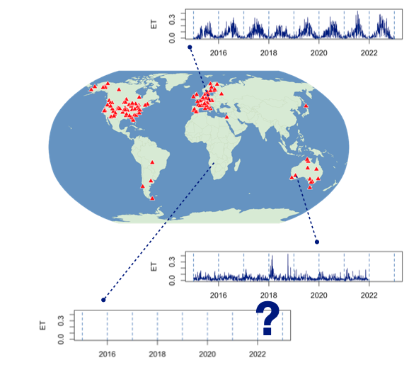

FLUXtrapolation leaderboard
This leaderboard tracks machine-learning model performance on the FLUXtrapolation benchmark for extrapolating ecosystem fluxes. Each model is scored on prediction error of three fluxes (ET, GPP, NEE) in three extrapolation scenarios (temporal, spatial, temperature) for six timescales.
sites/site-years
scenario

Highest skill score against the linear-regression baseline, for the filters above (higher is better).
Only reviewed models shown here.
The skill score compares a model's error with the linear-regression baseline
lr. For every cell in the table it is
1 − RMSE(model) / RMSE(lr), and the score shown is the average of
these over all timescales and all extrapolation scenarios currently selected.
0 means the model does as well as lr,
1 would mean zero error, and a negative score means the model is
worse than lr. Higher is better.
No reviewed models yet for this selection.
Each cell is the aggregated RMSE (median / 90th quantile) of the predicted site / site-year flux at that specific timescale (lower is better). Shading is relative to the best model in that column: full tint at the best value, none at 1.2× the best.
One number per model, relative to the linear-regression baseline: 0
means on par with lr, 1 means zero error, negative
means worse than lr.
- hourly
- raw hourly error
- weekly
- weekly means
- seasonal
- mean seasonal cycle
- anom
- anomalies from the seasonal cycle
- iav
- interannual variability
- site-mean
- long-term site mean
| temporal | spatial | temperature | |||||||||||||||||||
|---|---|---|---|---|---|---|---|---|---|---|---|---|---|---|---|---|---|---|---|---|---|
| Model | Val. | Institution | Skill score ↑ | hourly | weekly | seasonal | anom | iav | site-mean | hourly | weekly | seasonal | anom | iav | site-mean | hourly | weekly | seasonal | anom | iav | site-mean |
| coral ✓ | mean | - | 0.173 | 6.35 | 3.56 | 3.02 | 2.40 | 0.80 | 2.20 | 7.55 | 4.04 | 3.56 | 2.56 | 0.84 | 2.74 | 9.02 | 3.95 | 3.37 | 2.48 | 0.82 | 2.69 |
| mlp ✓ | mean | - | 0.169 | 6.50 | 3.56 | 2.93 | 2.47 | 0.82 | 2.26 | 7.33 | 3.95 | 3.54 | 2.58 | 0.84 | 2.74 | 9.01 | 4.04 | 3.15 | 2.47 | 0.87 | 2.77 |
| xgb ✓ | mean | - | 0.161 | 6.71 | 3.49 | 2.94 | 2.40 | 0.86 | 2.13 | 7.47 | 3.76 | 3.25 | 2.64 | 0.84 | 2.83 | 8.43 | 4.35 | 3.44 | 2.52 | 0.87 | 3.07 |
| LSTM | mean | - | 0.150 | 6.87 | 3.37 | 2.88 | 2.50 | 0.73 | 1.82 | 7.12 | 3.51 | 3.06 | 2.56 | 0.85 | 2.31 | 8.56 | 5.38 | 4.44 | 2.52 | 0.85 | 4.20 |
| gdro ✓ | mean | - | 0.022 | 6.60 | 3.51 | 3.01 | 2.39 | 0.81 | 2.13 | 7.84 | 4.14 | 3.80 | 2.64 | 0.85 | 2.75 | 10.01 | 7.28 | 7.00 | 2.64 | 0.89 | 5.71 |
| ridge ✓ | mean | - | 0.000 | 8.13 | 4.28 | 4.16 | 2.57 | 0.76 | 2.89 | 8.61 | 5.53 | 5.40 | 2.77 | 0.94 | 3.89 | 10.28 | 4.78 | 4.33 | 2.80 | 0.88 | 3.75 |
| lr ✓ | mean | - | - | 8.13 | 4.28 | 4.16 | 2.57 | 0.76 | 2.89 | 8.61 | 5.53 | 5.40 | 2.77 | 0.94 | 3.89 | 10.28 | 4.78 | 4.33 | 2.80 | 0.88 | 3.76 |
| mmd ✓ | mean | - | -0.250 | 13.33 | 6.60 | 6.60 | 2.86 | 0.82 | 5.73 | 11.89 | 6.51 | 5.25 | 2.87 | 0.84 | 3.89 | 14.29 | 5.72 | 5.45 | 2.95 | 0.94 | 4.31 |
| constant ✓ | mean | - | -0.369 | 13.33 | 6.53 | 6.57 | 2.86 | 0.82 | 5.65 | 14.14 | 6.88 | 6.97 | 3.12 | 0.92 | 5.39 | 15.93 | 6.57 | 6.00 | 3.18 | 1.07 | 5.42 |
| temporal | spatial | temperature | |||||||||||||||||||
|---|---|---|---|---|---|---|---|---|---|---|---|---|---|---|---|---|---|---|---|---|---|
| Model | Val. | Institution | Skill score ↑ | hourly | weekly | seasonal | anom | iav | site-mean | hourly | weekly | seasonal | anom | iav | site-mean | hourly | weekly | seasonal | anom | iav | site-mean |
| mlp ✓ | mean | - | 0.222 | 3.95 | 1.76 | 1.62 | 1.60 | 0.24 | 0.74 | 4.88 | 2.62 | 1.91 | 1.84 | 0.40 | 0.93 | 5.84 | 2.74 | 2.19 | 1.91 | 0.41 | 0.95 |
| coral ✓ | mean | - | 0.221 | 3.96 | 1.83 | 1.62 | 1.59 | 0.27 | 0.80 | 4.96 | 2.53 | 1.86 | 1.85 | 0.40 | 0.99 | 5.68 | 2.55 | 2.01 | 1.88 | 0.40 | 0.94 |
| xgb ✓ | mean | - | 0.215 | 3.96 | 1.82 | 1.62 | 1.61 | 0.26 | 0.67 | 4.69 | 2.37 | 1.99 | 1.80 | 0.42 | 1.12 | 5.56 | 2.50 | 1.94 | 1.95 | 0.45 | 1.10 |
| LSTM | mean | - | 0.203 | 3.82 | 1.78 | 1.53 | 1.58 | 0.30 | 0.70 | 4.54 | 2.25 | 1.76 | 1.84 | 0.40 | 0.88 | 5.98 | 2.96 | 2.19 | 2.01 | 0.45 | 1.32 |
| gdro ✓ | mean | - | 0.167 | 3.95 | 1.80 | 1.58 | 1.60 | 0.28 | 0.79 | 4.69 | 2.33 | 1.96 | 1.85 | 0.43 | 1.17 | 6.47 | 3.02 | 2.20 | 1.95 | 0.39 | 1.72 |
| ridge ✓ | mean | - | 0.000 | 6.01 | 2.81 | 2.60 | 1.91 | 0.25 | 1.18 | 6.08 | 2.94 | 2.61 | 2.07 | 0.48 | 1.44 | 7.50 | 3.14 | 2.52 | 2.33 | 0.43 | 1.53 |
| lr ✓ | mean | - | - | 6.01 | 2.81 | 2.60 | 1.91 | 0.25 | 1.18 | 6.08 | 2.94 | 2.61 | 2.07 | 0.48 | 1.44 | 7.50 | 3.14 | 2.53 | 2.33 | 0.43 | 1.53 |
| mmd ✓ | mean | - | -0.354 | 9.31 | 5.61 | 5.56 | 2.05 | 0.25 | 3.44 | 6.57 | 3.13 | 2.93 | 2.12 | 0.43 | 1.61 | 8.80 | 4.26 | 3.92 | 2.20 | 0.40 | 2.26 |
| constant ✓ | mean | - | -0.635 | 9.27 | 5.56 | 5.51 | 2.05 | 0.25 | 3.35 | 9.53 | 5.54 | 5.43 | 2.40 | 0.47 | 3.04 | 10.87 | 5.28 | 5.12 | 2.25 | 0.46 | 2.99 |
| temporal | spatial | temperature | |||||||||||||||||||
|---|---|---|---|---|---|---|---|---|---|---|---|---|---|---|---|---|---|---|---|---|---|
| Model | Val. | Institution | Skill score ↑ | hourly | weekly | seasonal | anom | iav | site-mean | hourly | weekly | seasonal | anom | iav | site-mean | hourly | weekly | seasonal | anom | iav | site-mean |
| xgb ✓ | mean | - | 0.167 | 5.19 | 2.91 | 2.26 | 2.18 | 0.64 | 1.31 | 5.33 | 3.36 | 2.63 | 1.96 | 0.82 | 1.85 | 4.93 | 2.86 | 2.31 | 1.44 | 0.57 | 1.67 |
| coral ✓ | mean | - | 0.167 | 5.23 | 2.99 | 2.25 | 2.25 | 0.63 | 1.29 | 4.76 | 2.92 | 2.37 | 1.96 | 0.79 | 1.81 | 5.31 | 3.20 | 2.69 | 1.45 | 0.52 | 2.03 |
| mmd ✓ | mean | - | 0.161 | 5.14 | 2.95 | 2.25 | 2.22 | 0.63 | 1.30 | 4.72 | 3.03 | 2.63 | 1.96 | 0.79 | 1.89 | 5.31 | 3.20 | 2.69 | 1.45 | 0.52 | 2.04 |
| mlp ✓ | mean | - | 0.152 | 5.11 | 2.90 | 2.26 | 2.18 | 0.66 | 1.40 | 5.03 | 3.15 | 2.75 | 1.97 | 0.82 | 1.83 | 5.30 | 3.20 | 2.64 | 1.46 | 0.52 | 1.97 |
| LSTM | mean | - | 0.141 | 5.39 | 3.00 | 2.25 | 2.21 | 0.64 | 1.35 | 5.35 | 3.42 | 2.40 | 2.00 | 0.81 | 1.75 | 5.39 | 3.18 | 2.74 | 1.49 | 0.57 | 2.11 |
| lr ✓ | mean | - | - | 6.28 | 3.45 | 2.89 | 2.22 | 0.69 | 2.50 | 5.98 | 3.50 | 2.99 | 2.22 | 0.87 | 2.45 | 6.12 | 3.63 | 3.33 | 1.49 | 0.60 | 2.80 |
| ridge ✓ | mean | - | -0.000 | 6.28 | 3.45 | 2.89 | 2.22 | 0.69 | 2.50 | 5.98 | 3.50 | 2.99 | 2.22 | 0.87 | 2.45 | 6.12 | 3.63 | 3.33 | 1.49 | 0.60 | 2.80 |
| gdro ✓ | mean | - | -0.010 | 5.57 | 3.52 | 2.72 | 2.32 | 0.60 | 1.73 | 4.95 | 2.94 | 2.54 | 2.03 | 0.94 | 1.74 | 6.93 | 4.93 | 4.80 | 1.67 | 0.58 | 4.16 |
| constant ✓ | mean | - | -0.304 | 9.34 | 4.98 | 4.71 | 2.46 | 0.72 | 4.00 | 9.22 | 4.51 | 4.16 | 2.33 | 0.75 | 3.10 | 8.52 | 4.72 | 4.30 | 1.62 | 0.73 | 4.13 |
| temporal | spatial | temperature | |||||||||||||||||||
|---|---|---|---|---|---|---|---|---|---|---|---|---|---|---|---|---|---|---|---|---|---|
| Model | Val. | Institution | Skill score ↑ | hourly | weekly | seasonal | anom | iav | site-mean | hourly | weekly | seasonal | anom | iav | site-mean | hourly | weekly | seasonal | anom | iav | site-mean |
| mmd ✓ | mean | - | 0.292 | 2.35 | 1.12 | 0.95 | 0.90 | 0.18 | 0.42 | 3.24 | 1.73 | 1.17 | 1.20 | 0.33 | 0.57 | 3.18 | 1.26 | 1.00 | 0.83 | 0.20 | 0.55 |
| coral ✓ | mean | - | 0.278 | 2.39 | 1.15 | 1.03 | 0.91 | 0.19 | 0.48 | 3.24 | 1.75 | 1.19 | 1.20 | 0.33 | 0.59 | 3.18 | 1.26 | 1.01 | 0.83 | 0.20 | 0.55 |
| mlp ✓ | mean | - | 0.276 | 2.35 | 1.14 | 1.00 | 0.89 | 0.20 | 0.43 | 3.45 | 1.92 | 1.32 | 1.24 | 0.33 | 0.49 | 3.14 | 1.26 | 1.02 | 0.83 | 0.20 | 0.54 |
| LSTM | mean | - | 0.272 | 2.38 | 1.13 | 1.02 | 0.91 | 0.19 | 0.42 | 3.29 | 1.79 | 1.12 | 1.20 | 0.32 | 0.45 | 3.42 | 1.53 | 1.20 | 0.85 | 0.17 | 0.77 |
| xgb ✓ | mean | - | 0.258 | 2.40 | 1.16 | 1.06 | 0.89 | 0.22 | 0.41 | 3.47 | 1.93 | 1.30 | 1.21 | 0.34 | 0.67 | 3.01 | 1.27 | 1.03 | 0.83 | 0.21 | 0.49 |
| ridge ✓ | mean | - | 0.000 | 4.33 | 2.10 | 1.92 | 1.09 | 0.20 | 0.89 | 4.46 | 2.13 | 1.73 | 1.43 | 0.40 | 0.82 | 4.63 | 1.91 | 1.52 | 0.86 | 0.20 | 1.21 |
| lr ✓ | mean | - | - | 4.33 | 2.09 | 1.92 | 1.09 | 0.20 | 0.89 | 4.46 | 2.13 | 1.73 | 1.43 | 0.40 | 0.82 | 4.63 | 1.91 | 1.52 | 0.86 | 0.20 | 1.21 |
| gdro ✓ | mean | - | -0.000 | 3.24 | 1.70 | 1.49 | 0.96 | 0.20 | 0.68 | 3.66 | 1.87 | 1.29 | 1.35 | 0.41 | 0.53 | 4.16 | 2.66 | 2.46 | 1.05 | 0.25 | 1.98 |
| constant ✓ | mean | - | -0.500 | 6.24 | 3.93 | 3.83 | 1.13 | 0.22 | 1.73 | 6.91 | 3.81 | 3.53 | 1.43 | 0.38 | 1.13 | 5.41 | 3.34 | 3.13 | 1.04 | 0.28 | 1.69 |
| temporal | spatial | temperature | |||||||||||||||||||
|---|---|---|---|---|---|---|---|---|---|---|---|---|---|---|---|---|---|---|---|---|---|
| Model | Val. | Institution | Skill score ↑ | hourly | weekly | seasonal | anom | iav | site-mean | hourly | weekly | seasonal | anom | iav | site-mean | hourly | weekly | seasonal | anom | iav | site-mean |
| xgb ✓ | mean | - | 0.236 | 4.75 | 2.41 | 1.71 | 1.74 | 0.40 | 1.04 | 4.52 | 2.40 | 2.15 | 1.68 | 0.58 | 1.35 | 4.90 | 1.96 | 1.50 | 1.24 | 0.33 | 1.18 |
| mmd ✓ | mean | - | 0.232 | 4.84 | 2.39 | 1.83 | 1.77 | 0.41 | 1.11 | 4.51 | 2.33 | 1.87 | 1.68 | 0.58 | 1.28 | 4.77 | 1.99 | 1.64 | 1.19 | 0.33 | 1.39 |
| coral ✓ | mean | - | 0.224 | 4.89 | 2.44 | 1.94 | 1.73 | 0.41 | 1.06 | 4.73 | 2.44 | 1.93 | 1.68 | 0.58 | 1.33 | 4.76 | 1.99 | 1.64 | 1.19 | 0.33 | 1.39 |
| mlp ✓ | mean | - | 0.216 | 4.84 | 2.48 | 1.93 | 1.73 | 0.40 | 1.12 | 4.72 | 2.46 | 2.03 | 1.70 | 0.57 | 1.53 | 4.80 | 2.02 | 1.71 | 1.19 | 0.33 | 1.31 |
| LSTM | mean | - | 0.196 | 4.77 | 2.52 | 1.89 | 1.87 | 0.41 | 1.12 | 4.67 | 2.46 | 1.95 | 1.65 | 0.59 | 1.54 | 4.84 | 2.11 | 1.72 | 1.25 | 0.39 | 1.51 |
| ridge ✓ | mean | - | 0.000 | 5.94 | 2.99 | 2.49 | 1.87 | 0.42 | 2.08 | 5.75 | 3.07 | 2.96 | 1.79 | 0.60 | 2.35 | 5.63 | 3.03 | 2.96 | 1.32 | 0.37 | 2.50 |
| lr ✓ | mean | - | - | 5.94 | 2.99 | 2.49 | 1.87 | 0.42 | 2.08 | 5.75 | 3.07 | 2.96 | 1.79 | 0.60 | 2.35 | 5.63 | 3.03 | 2.96 | 1.32 | 0.37 | 2.50 |
| gdro ✓ | mean | - | -0.005 | 5.09 | 2.97 | 2.73 | 1.96 | 0.44 | 1.80 | 4.85 | 3.06 | 2.74 | 1.73 | 0.57 | 2.56 | 5.58 | 3.40 | 3.29 | 1.27 | 0.37 | 3.04 |
| constant ✓ | mean | - | -0.090 | 8.11 | 3.40 | 3.19 | 2.10 | 0.46 | 2.15 | 8.02 | 3.25 | 2.95 | 1.82 | 0.59 | 2.14 | 8.22 | 2.82 | 2.68 | 1.39 | 0.36 | 2.30 |
| temporal | spatial | temperature | |||||||||||||||||||
|---|---|---|---|---|---|---|---|---|---|---|---|---|---|---|---|---|---|---|---|---|---|
| Model | Val. | Institution | Skill score ↑ | hourly | weekly | seasonal | anom | iav | site-mean | hourly | weekly | seasonal | anom | iav | site-mean | hourly | weekly | seasonal | anom | iav | site-mean |
| mmd ✓ | mean | - | 0.331 | 2.23 | 0.93 | 0.76 | 0.75 | 0.13 | 0.30 | 2.89 | 1.42 | 0.94 | 0.98 | 0.19 | 0.30 | 2.85 | 1.13 | 0.93 | 0.73 | 0.14 | 0.48 |
| coral ✓ | mean | - | 0.322 | 2.24 | 0.95 | 0.78 | 0.75 | 0.13 | 0.29 | 2.87 | 1.41 | 0.98 | 0.98 | 0.19 | 0.38 | 2.85 | 1.13 | 0.93 | 0.73 | 0.14 | 0.48 |
| mlp ✓ | mean | - | 0.318 | 2.26 | 0.95 | 0.75 | 0.75 | 0.11 | 0.30 | 2.91 | 1.43 | 1.00 | 1.03 | 0.19 | 0.38 | 2.91 | 1.13 | 0.96 | 0.73 | 0.14 | 0.55 |
| xgb ✓ | mean | - | 0.314 | 2.27 | 0.96 | 0.81 | 0.74 | 0.11 | 0.30 | 2.99 | 1.47 | 1.00 | 0.99 | 0.19 | 0.43 | 2.87 | 1.20 | 0.78 | 0.75 | 0.14 | 0.57 |
| LSTM | mean | - | 0.271 | 2.29 | 0.95 | 0.79 | 0.77 | 0.14 | 0.33 | 3.03 | 1.32 | 1.05 | 1.01 | 0.19 | 0.50 | 2.99 | 1.27 | 1.05 | 0.82 | 0.16 | 0.67 |
| ridge ✓ | mean | - | 0.000 | 4.02 | 1.69 | 1.57 | 0.93 | 0.16 | 0.90 | 4.09 | 1.63 | 1.44 | 1.20 | 0.22 | 0.68 | 4.50 | 1.78 | 1.70 | 0.81 | 0.13 | 1.44 |
| lr ✓ | mean | - | - | 4.02 | 1.69 | 1.57 | 0.93 | 0.16 | 0.90 | 4.09 | 1.63 | 1.44 | 1.20 | 0.22 | 0.68 | 4.50 | 1.78 | 1.70 | 0.81 | 0.13 | 1.44 |
| gdro ✓ | mean | - | -0.034 | 3.25 | 1.71 | 1.56 | 0.89 | 0.17 | 0.64 | 3.65 | 1.79 | 1.49 | 1.17 | 0.23 | 0.85 | 3.68 | 2.31 | 2.20 | 0.89 | 0.13 | 1.73 |
| constant ✓ | mean | - | -0.286 | 5.42 | 2.25 | 2.18 | 0.93 | 0.13 | 1.71 | 6.26 | 2.30 | 2.06 | 1.26 | 0.18 | 1.54 | 5.04 | 2.01 | 1.98 | 0.75 | 0.17 | 1.66 |
A ✓ after a model name marks a method whose code we have checked. For top-performing methods from other institutions or contributors, we manually check the submitted code to ensure, for example, that there is no test-set leakage. If we find issues, we (temporarily) remove the submission and contact the author.